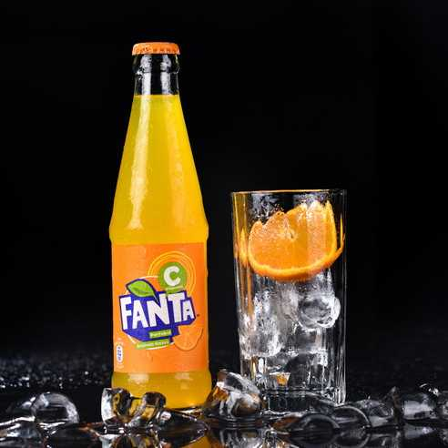
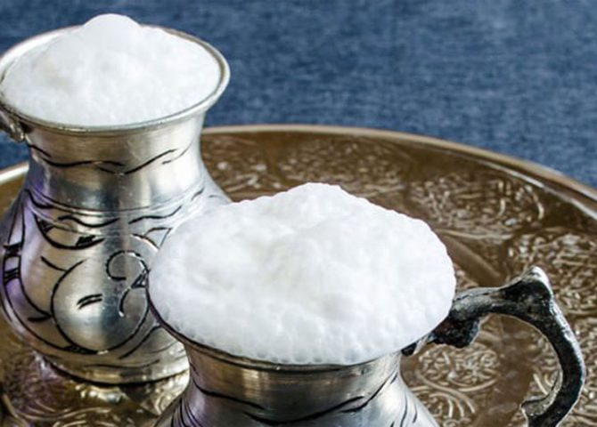

Coca-Cola
Kola, gazlı, karamel tadında bir meşrubattır. Genellikle kafein içerir ve tatlı bir lezzete sahiptir. Dünya genelinde popüler bir içecektir..

Fanta
Fanta, turuncu renkteki gazlı bir meyve sodasıdır. Portakal tadıyla bilinir ve ferahlatıcı bir içecek olarak tercih edilir..

Ayran
Ayran, Türk yapımı yoğurt, su ve tuzun karıştırılmasıyla yapılan sağlıklı bir içecektir. Soğuk servis edilir ve özellikle sıcak yaz günlerinde tercih edilen bir içecektir.